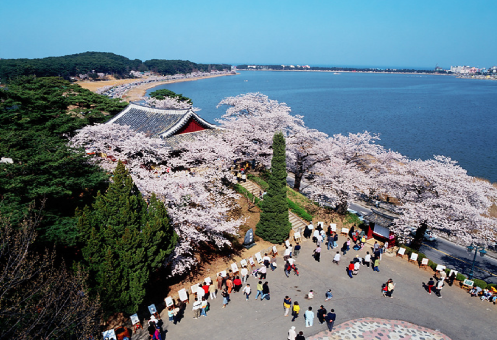
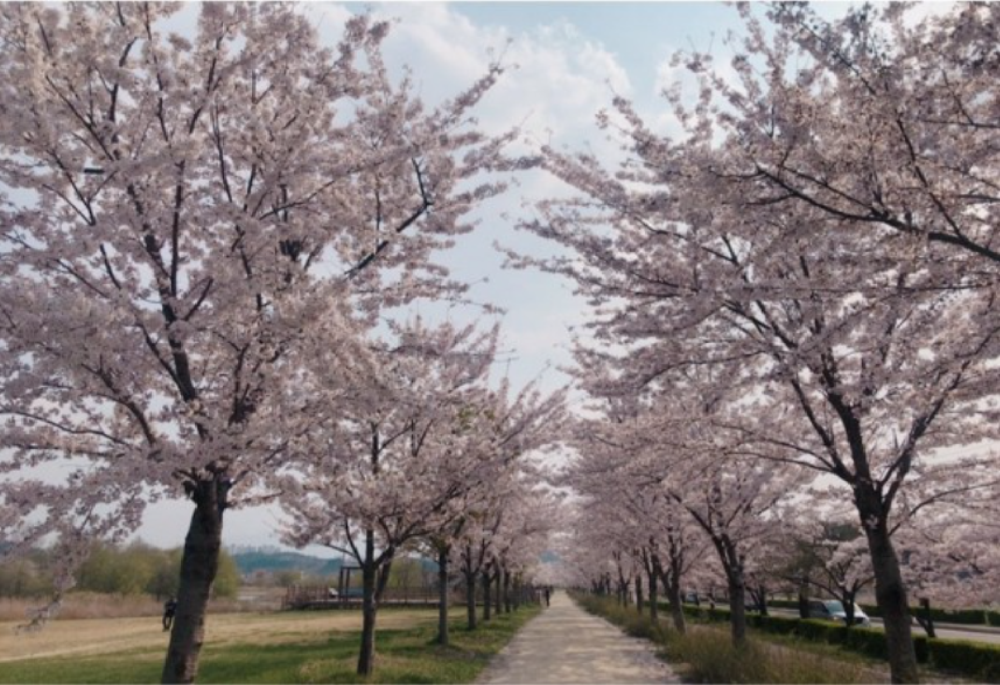
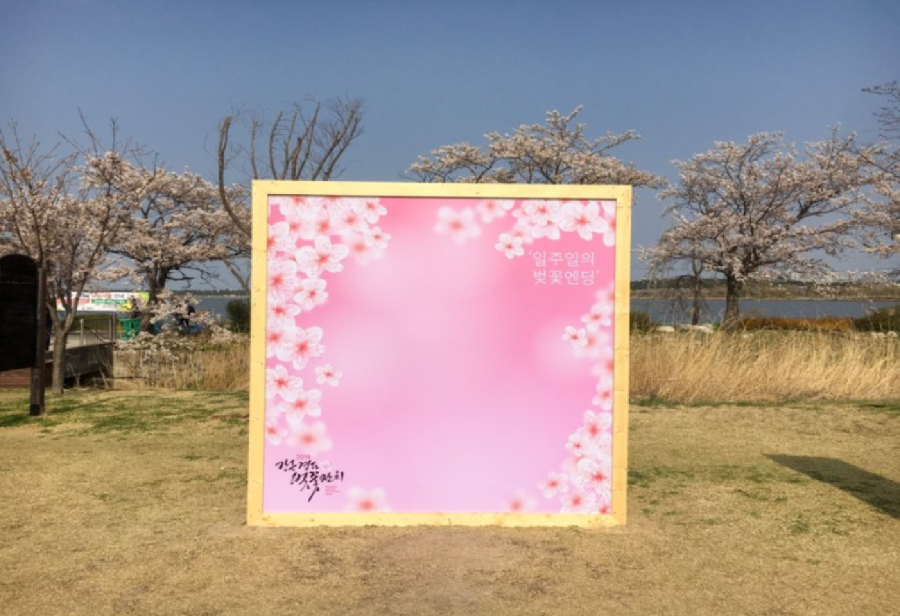

경포벚꽃축제
- 강릉 경포벚꽃축제
- 예부터 경포대 진입로 3㎞ 구간은 벚꽃이 만발하여 관광자원으로 손색이 없었다.
이를 시민들에게 개방함으로써 유락과 휴식 외에 관광객 유치에도 유인요소가 되었다.
더구나 관동팔경 중의 하나로 손꼽히는 경포대이기 때문에 그 정취가 빛난다는 점에서
1993년 4월부터 경포대 벚꽃 축제가 열리기 시작하였다.2003년의 경우 전체 행사기간은
4월 8일부터 4월 14일까지 7일 간이었으며, 문화예술이벤트 행사는 벚꽃이 만발한 4월 9일과 10일,
이틀 간 개최되었다.

경포벚꽃축제
- 강릉 경포벚꽃축제
- 2004년에는 벚꽃이 일찍 피어 4월 1일부터 4월 7일까지 7일 간 개최되었으며,
교향악단, 강릉관노가면극, 강릉농악, 강릉시립예술단음악회, 그린실버악단, 이벤트기획사 공연 등 다채로운 행사를 펼쳤다.
2011년 4월 14일부터 4월 23일까지 10일간 시민노래자랑, 먹거리장터, 밸리댄스팀, 대학 동아리 댄스팀, 청소년 난타팀,
주민자치위원회의 사물놀이 공연 등, 다양하고 다채로운 행사가 진행되었다.경포대 벚꽃 축제는 벚꽃 개화기를 전후해 약 1주일 동안 경포대 일원에서 개최된다.
이 기간 동안에 관동팔경 중 제일로 꼽히는 경포대를 무료로 개방한다.

경포벚꽃축제
- 강릉 경포벚꽃축제
- 강릉시의 오랜 축제로 자리 잡고 있으며, 앞으로 관동팔경의 하나인 경포대 일원과 봄의 여왕이라 할 벚꽃이 잘 어우러진다면 더 많은 관람객들이 찾으리라 생각된다.
다만, 강릉시민 및 관광객들이 편안하게 휴식을 취하면서 다양한 볼거리를 누릴 수 있게 하기 위해서는 경포대 주위의 공중화장실 문화를 개선하는 등 주변 시설 정비가 필요하다.
